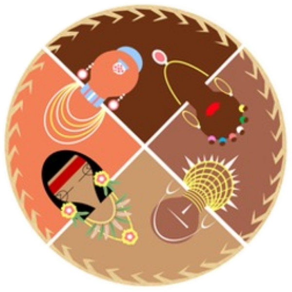

IFRN · Campus Currais Novos
Núcleo de Estudos Afro-Brasileiros e Indígenas
Agora no NEABI
[DD/MM]
[TÍTULO DO ENCONTRO]
[HORÁRIO · LOCAL]
Para ver o próximo encontro, ative o JavaScript do navegador.